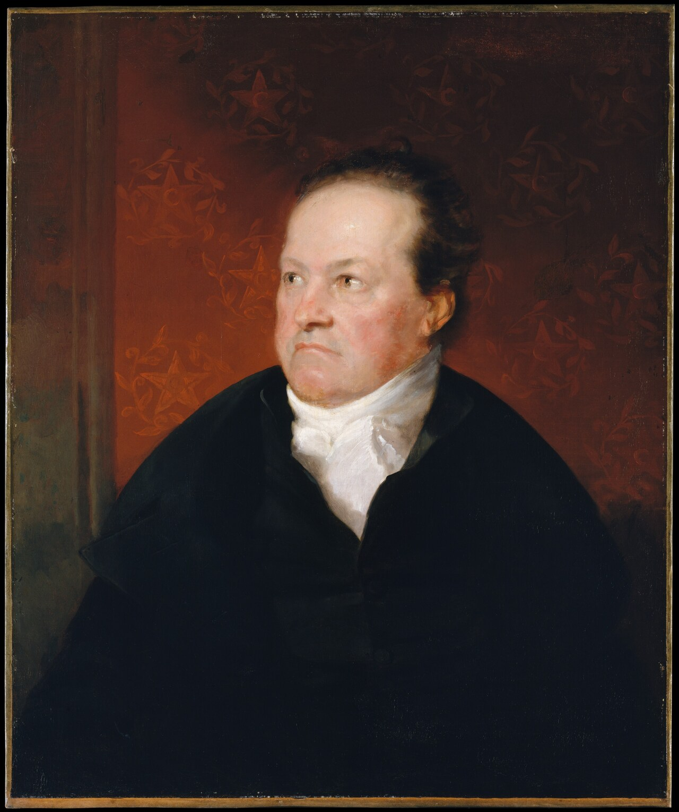
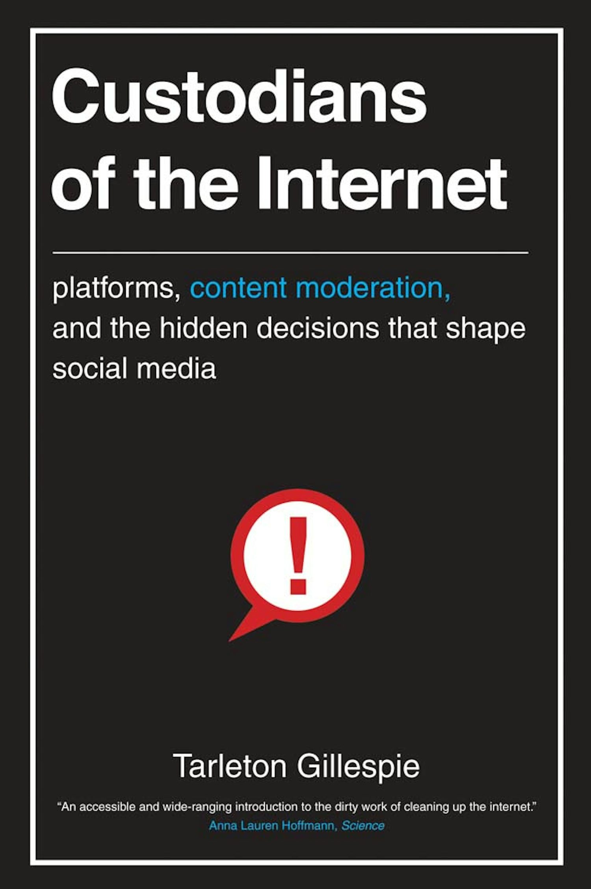
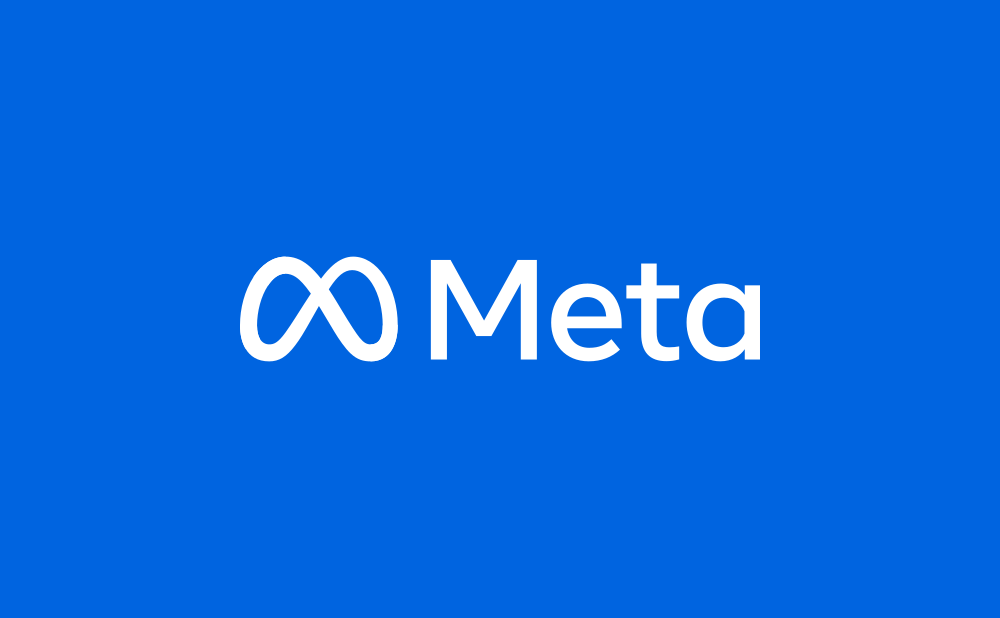
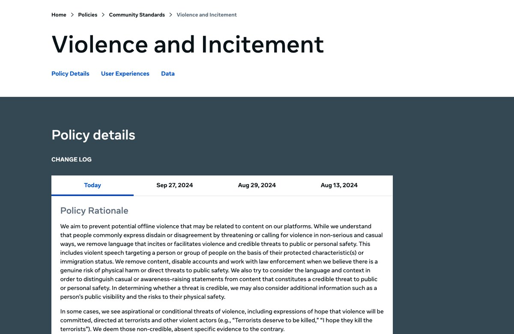
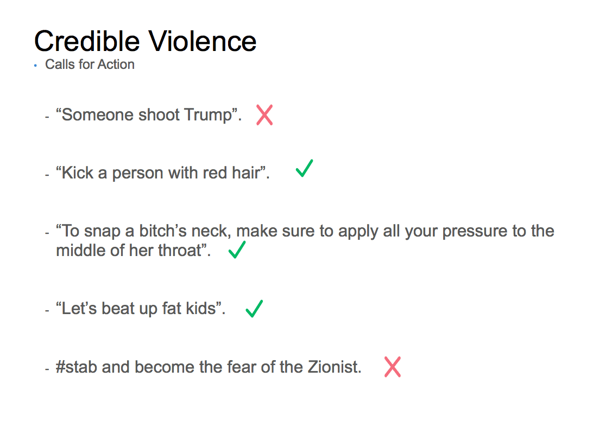
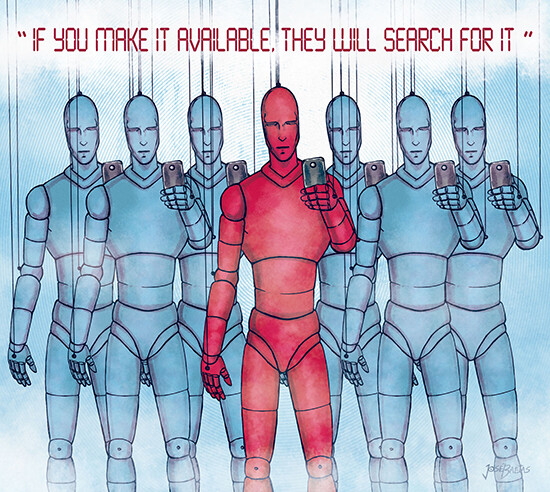
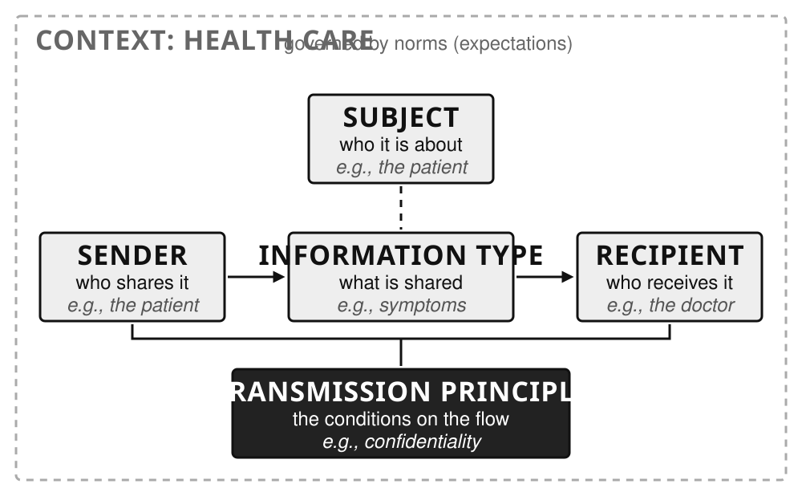

Content Moderation and Intro to Stories
CS 377, Week 5, Day 1 🟦 Clinton 🟦
Content Moderation, Intro to Stories
CS 377, Week 5, Day 1 🟦 Clinton 🟦
Agenda for Today
- Ethics in the news
- Shuffle seats
- Warm-up: book check-in
- Mini-lecture: content moderation
- Moderation case studies
- Discuss “Omelas” (Le Guin)
- Preview “Here and Now” + exercise

(DeWitt) Clinton Connection

Samuel F. B. Morse, DeWitt Clinton, c. 1826. Metropolitan Museum of Art via Wikimedia Commons, public domain (CC0)
{kind=link}
Anthony Imbert, Grand Canal Celebration, New York, 1825. Wikimedia Commons, public domain
{kind=link}
Ethics in the News
September 21, 2026: two of the day’s AI stories — a payout for a feature that shipped late, and an argument about how dangerous the technology is.
🔀 Seat Shuffle
- Shuffle seats!
- Enter a seed and shuffle
Table Discussion: Book Check-in
- How is your book coming along?
- How much have you read?
- What have you learned so far?
- How long do you think it will take to complete?
- What’s your plan to read the rest?
- Presentation ideas?
Mini-lecture: Content Moderation
Generic Feed System Architecture (Recap)
- Moderation
- Candidate generation
- Ranking
- Re-ranking

Free Speech
- First Amendment: “Congress shall make no law…abridging the freedom of speech, or of the press”
- Section 230 (Communications Decency Act): “It is the policy of the United States… to encourage the development of technologies which maximize user control over what information is received by individuals…who use the Internet…”
The engrossed Bill of Rights, 1789 — the First Amendment is the third article listed. World Digital Library via Wikimedia Commons, public domain
{kind=link}
Custodians of the Internet
- Tarleton Gillespie, Microsoft Research
- Moderation usually looks peripheral (“a custodial task, like turning the lights on and off and sweeping the floors”)
- What if it is central to what a platform is?

Custodians of the Internet, Yale University Press, 2018 ; full PDF from the author, CC BY-NC-SA 4.0
Moderation as the Product
“Moderation is, in many ways, the commodity that platforms offer.”
— Tarleton Gillespie, Custodians of the Internet (2018), p. 13
Moderation at Scale: Meta
- ~15,000 content moderators
- ~1 moderator per 330,000 users
- ~40,000 in trust and safety
Moderator count via The New York Times; 40,000 figure from Meta’s testimony at the Senate Judiciary hearing (January 2024). See Meta Community Standards Enforcement Report

Moderation at Scale: TikTok
- Claims 40,000 workers in global trust and safety
- Stated focus on “minor safety”
- ~81% of removals automated
Moderation at Scale: YouTube
- Estimated 7,000–10,000 moderators
- 9.5 million videos removed in Q4 2024
- 842.8 million comments removed
Removal counts: Google Transparency Report: YouTube Community Guidelines enforcement. Moderator count is an outside estimate.
Moderation Case Studies
Content Notice
- The next slide shows a graphic image of war violence, including injured children.
- A later slide reproduces a leaked Facebook training slide with some misogynistic and violent language.
- They are cases that forced platforms to rewrite their rules.
Example: “The Terror of War” (1972)
Vietnam, 8 June 1972. Facebook removed the photo in 2016 as child nudity, then reversed (see open letter from the editor of Norway’s largest newspaper). Long credited to Nick Ut/AP; authorship under review by World Press Photo. Wikimedia Commons, public domain
{kind=link}
Example: The Terror of War
“Napalm is very powerful, but faith, forgiveness, and love are much more powerful. We would not have war at all if everyone could learn how to live with true love, hope, and forgiveness.”
— Phan Thi Kim Phuc, NPR interview (2008)
Example: “Credible Violence”

Meta’s current public rule, successor to the internal “credible violence” rulebook leaked to Nick Hopkins, “Facebook’s internal rulebook on sex, terrorism and violence,” The Guardian (2017).
Example: The Leaked Rulebook (2017)

“Facebook’s policy on threats of violence. A green check means something can stay on the site; a red cross means it should be deleted.” See The Guardian in 2017, the start of Meta’s public Violence and Incitement policy.
Ethical Questions in Content Moderation
Design questions
- Who writes the rules?
- How are edge cases handled?
- What appeals processes exist?
- Who decides what is “newsworthy”? How?
Outcome questions
- Who does the actual moderation labor?
- Which communities are most affected by errors?
- Whose speech is protected? Whose is suppressed?
Thoughts or Questions on Algorithmic Feeds? Moderation?
Intro to Stories
Ursula K. Le Guin (1929–2018)
- Born in Berkeley, California
- Wrote science fiction, fantasy, poetry, essays, translations
- Best known for the Earthsea books
- “The Ones Who Walk Away from Omelas” (1973) won the Hugo Award for Best Short Story in 1974
- Lived in Portland, Oregon (1959-2018)
Ursula K. Le Guin, August 1995. Photo: Marian Wood Kolisch, Oregon State University, CC BY-SA 2.0
_-_Restoration.jpg){kind=link}
A Writer’s Day
Kate Jones, “Writing Rituals of Ursula K. Le Guin” — from a 1988 interview, republished in Ursula Le Guin: The Last Interview and Other Conversations
| Time | What |
|---|---|
| 5:30 a.m. | Wake up and lie there and think |
| 6:15 a.m. | Get up and eat breakfast (lots) |
| 7:15 a.m. | Get to work writing, writing, writing |
| Noon | Lunch |
| 1:00–3:00 p.m. | Reading, music |
| 3:00–5:00 p.m. | Correspondence, maybe house cleaning |
| 5:00–8:00 p.m. | Make dinner and eat it |
| After 8:00 p.m. | “I tend to be very stupid and we won’t talk about this” |
Table Discussion: The Tortured Child
The Full Story
- That dilemma is the premise of a short story
- Omelas is a city of genuine happiness
- Everyone is told about the child when they come of age
- Le Guin credited the idea to William James’ “The Moral Philosopher and the Moral Life” (1891)
- Said she had forgotten Dostoyevsky’s earlier version when she wrote it.
The Next Story: “Here and Now”
- Written by Ken Liu
- Main character is Aaron
- Centers around an app that facilitates anonymous requests for “information” of any kind
- Made by Centillion, Inc.
- Web link on site; PDF in Canvas
- Reading + reflection!

Artwork by José Baetas for Kasma Magazine
Exercise Preview: Online Account Biopsy (Due Sept 27, 11:59pm)
Questions / Comments / Etc.?
That’s all for today! See you Wednesday!
Here and Now, Privacy as Contextual Integrity
CS 377, Week 5, Day 2 🟦 LaSalle 🟦
Privacy as Contextual Integrity
CS 377, Week 5, Day 2 🟦 LaSalle 🟦
Map for Today
- Shuffle seats
- Warm-up discussion: free will
- “Here and Now” discussion
- Intro to privacy as “contextual integrity”
- Preview “Message in a Bottle”
- Reflection: I like / I wish

Nearby Event of Interest!
🔀 Seat Shuffle
- Shuffle seats!
- Enter a seed and shuffle
Warm-up Discussion: Free Will
- Do you believe in free will?
- Are you sure?
- Did you freely and willingly decide to come to class today?
- Did you freely decide to enroll in CS 377?
- Did you freely decide to attend UIC?
“Here and Now”
“Here and Now”
- Written by Ken Liu
- Main character is Aaron
- Centers around an app that facilitates anonymous requests for “information” of any kind
- Made by Centillion, Inc.
Artwork by José Baetas for Kasma Magazine
Table Discussion: “Here and Now”
- What do we know about Aaron? (What does he enjoy? What does he want?)
- What other characters did you notice?
- Would you use Tilly Here-and-Now?
- Which use cases seemed comfortable or innocuous?
- Which use cases made you feel uncomfortable?
- What do you think of Centillion?
Introduction to Privacy
What Is Privacy?
- What comes to mind when you think of privacy?
- What are some examples of privacy controls?
- What are examples of privacy violations?
- Can you propose a definition of privacy?
Defining Privacy
- Often conceptualized as a right
- Often associated with protection, security, safety
- In celebrity / paparazzi context: “the right to be left alone”
- Framework for this class: contextual integrity
- “Appropriate flows of information”
- Subject, sender, and receiver
Background reading: SEP, Privacy and SEP, Privacy and Information Technology
Contextual Integrity
- Privacy as appropriate data flows
- Beyond binary (e.g. public/private)
- Depends on specific contexts
- Contexts are governed by norms (also called expectations)
- Theorized by Helen Nissenbaum
- University of the Witwatersrand → M.A. and PhD from Stanford

Helen Nissenbaum. Photo: CMU CyLab, 2023
Contextual Integrity: Five Parameters

An information flow is appropriate when it matches the norms of its context. The same flow can become a violation when a parameter changes. Original diagram, based on Nissenbaum (2004) and Malkin (2023).
Data Types
Information about a data subject can be varied:
- Health information
- Biometric data
- Relationships
- Location history
- Employment history
- Financial / purchasing history
- Espoused viewpoints
Common Transmission Principles
- Existence of a warrant / court order
- Consent of the subject (or parent/guardian if minor)
- Reciprocity
- Authority / legal entitlement
- Chatham House rule
- Mandatory disclosure
- Confidentiality
- Commercial benefit
Defining Two Principles
- Consent: the data subject makes an informed agreement
- Confidentiality: the recipient keeps the information secret
- Example: a therapist keeps client sessions confidential
Contextual Integrity Examples
Example: Student Grades (1)
A professor is offered $100 from a marketing corporation seeking email addresses and grades from all students in CS 377.
- Sender? Recipient? Subject? Data type? Principle? Purpose?
Example: Student Grades (2)
A professor is approached by the chair of the CS department, who requests recent grades for CS 377.
- Sender? Recipient? Subject? Data type? Principle? Purpose?
Example: Job Interviews
In job interviews, interviewers are not allowed to ask candidates about their religious practices.
- Sender? Recipient? Subject? Data type? Principle? Purpose?
Example: Raine v. OpenAI
- Ongoing lawsuit (filed August 2025) by parents of Adam Raine
- OpenAI: “We are currently not referring self-harm cases to law enforcement to respect people’s privacy given the uniquely private nature of ChatGPT interactions”
- Chat logs later shared by family
Privacy Here and Now
- What data does Centillion collect about users?
- Sender, recipient, subject, data type, transmission principle?
- Are there any (in)appropriate information flows within the social context(s)?
Artwork by José Baetas for Kasma Magazine
Preview: “Message in a Bottle”
- Written by Nalo Hopkinson
- Central character is Greg
- Longer than the first story!
- Annotation due Sunday, 11:59pm
Nalo Hopkinson at the Hugo Award Ceremony, August 2017. Photo: Sanna Pudas, CC BY 4.0
{kind=link}
Group Reflection: I Like / I Wish
- Share something you like about the course so far
- Share something you wish were different
- Discuss at your table and write down (“We like / We wish”)
- You can leave when finished
That’s all for today, see you Monday!
Appendix: Leftover Slides
Slides that need to be re-organized…
More on Content Moderation
Moderation Labor at OpenAI
- Moderators label and filter toxic and/or explicit text for model training
- Violence, hate speech, explicit material
- Larger projects in 2021–2022
- TODO: add image — reporting on OpenAI content moderation labor (TIME lead photo is © — needs a licensed substitute)
Background on moderation labor: Sarah T. Roberts, Behind the Screen (Yale University Press, 2019)
More on Privacy
Perspectives on Privacy
- Control over information — analogous to property rights, managing “data boundaries”
- Adherence to rules (contextual norms)
- Something else?
Online Account Biopsy
- Introduce yourselves at your table
- Discuss which app or website you want to use
- Find the “request my data” option in the app
- This will be used for your “online account biopsy” exercise
- Should only take ~5 minutes
Privacy Policies
Group Exercise: Privacy Policies
- See handout — choose a company:
- YouTube, Snapchat, TikTok, Anthropic, Amazon, Instagram, Google, Reddit, Facebook, LinkedIn, Apple, others
- Analyze their privacy policy using contextual integrity
- You can leave once you turn in your completed sheet
ChatGPT / OpenAI Policy: What’s Collected
- Name, contact information, date of birth
- Prompts, files, images
- Contact data (if shared)
- Log data (via direct input, third-party data, inference)
ChatGPT / OpenAI Policy: Third Parties
- “trusted security and safety partners”
- “advertisers and other data partners” (e.g. info about purchases from advertisers)
- “To assist in meeting business operations needs”
ChatGPT / OpenAI Policy: Location Data
- “General area” based on IP address
- More precise GPS info for other services
- Purposes: “protect your account by detecting unusual login activity” and “to provide more accurate responses”
ChatGPT / OpenAI Policy: Retention
- Temporary chats automatically deleted within 30 days
- Other info retained until deletion
- “In some cases, we need to retain Personal Data for longer even after you delete it, for example because we are legally required to, to address fraud and abuse, for security reasons, or for financial record-keeping purposes”
ChatGPT / OpenAI Policy: Length
- About 3,000 words; 5–6 pages
- Seems to have stayed about the same length over time
Overview: Federal Privacy Laws in the U.S.
| Law | Year | Covers |
|---|---|---|
| FERPA | 1974 | Student education records |
| HIPAA | 1996 | Health information |
| COPPA | 1998 | Children under 13 online |
| GLBA | 1999 | Financial institutions |
| Children’s Internet Protection Act | 2000 | Schools and libraries |
There is no single comprehensive federal privacy law — coverage is sectoral.
Digital Rights
Warm-up Discussion: What Are Rights?
- What comes to mind when you hear the word “rights”?
- What are some examples of rights you have?
- What are some rights you want to have, but are unsure whether you have?
- What are some examples of “human rights”?
- Where do these rights come from?
- What is a privilege compared to a right?
Rights and Laws
- Where do rights come from? Declarations, constitutions, statutes, courts
- A right without an enforcement mechanism behaves differently from one with it
- What is a privilege compared to a right?
From 1949 to 2022
- TODO: add image — UDHR 1949 → AI Bill of Rights 2022 comparison
Both primary documents: Universal Declaration of Human Rights (United Nations, 1948) and Blueprint for an AI Bill of Rights (OSTP, 2022 — served from the Biden White House archive since the live whitehouse.gov page was taken down)
Eleanor Roosevelt and the UDHR

Eleanor Roosevelt with the English-language text of the UDHR, Lake Success, New York, November 1949. FDR Presidential Library via Wikimedia Commons, CC BY 2.0
{kind=link}
Eleanor Roosevelt on the UDHR
“It is not a treaty; it is not an international agreement. It is not and does not purport to be a statement of law or of legal obligation. It is a declaration of basic principles of human rights and freedoms, to be stamped with the approval of the General Assembly by formal vote of its members, and to serve as a common standard of achievement for all peoples of all nations.”
— Eleanor Roosevelt
Blueprint for an “AI Bill of Rights”
- Office of Science and Technology Policy (2022)
- “Intended to support the development of policies and practices that protect civil rights and promote democratic values in the building, deployment, and governance of automated systems”
Activity: Proposed Digital Rights (A–D)
Review each proposed right — strengths? Weaknesses? Examples where it would come into play?
- A: “You should be protected from unsafe or ineffective systems.”
- B: “You should not face discrimination by algorithms and systems should be used and designed in an equitable way.”
- C: “You should be protected from abusive data practices via built-in protections and you should have agency over how data about you is used.”
- D: “You should know that an automated system is being used and understand how and why it contributes to outcomes that impact you.”
Activity: Proposed Digital Rights (E–G)
Review each proposed right — strengths? Weaknesses? Examples where it would come into play?
- E: “You should be able to opt out, where appropriate, and have access to a person who can quickly consider and remedy problems you encounter.”
- F: “You should have the ability to request deletion of your personal data and digital traces from automated systems and databases.”
- G: “You should have the right to repair, modify, and maintain automated systems that you own or that significantly impact your daily life.”
References & Credits
- GitHub source: https://github.com/jackbandy/ethical-issues-in-computing-uic/blob/main/docs/slides/week5.md.
- Last modified and compiled September 24, 18:14h.
- Tarleton Gillespie, Custodians of the Internet (Yale University Press, 2018) — full text released by the author under CC BY-NC-SA 4.0; cover art from Yale University Press, © Yale University Press.
- Tarleton Gillespie, “Content Moderation, AI, and the Question of Scale”, Big Data & Society (2020).
- Nick Hopkins, “Revealed: Facebook’s internal rulebook on sex, terrorism and violence”, The Guardian (2017) — the “Credible Violence” training slide reproduced here is that story’s figure, © Guardian News & Media / Facebook, used for classroom commentary on the leaked rulebook.
- Nathan Malkin, “Contextual Integrity, Explained”, IEEE Security & Privacy 21(1) (2023).
- White House OSTP, Blueprint for an AI Bill of Rights (2022).
- Schaffner et al., “Community Guidelines Make this the Best Party on the Internet”, CHI 2024.
- Helen Nissenbaum, “Privacy as Contextual Integrity”, Washington Law Review 79(1) (2004) — open access.
- Stanford Encyclopedia of Philosophy, Privacy and Privacy and Information Technology.
- Espen Egil Hansen, “Dear Mark…”, Aftenposten (2016) — open letter on the “Terror of War” removal.
- Billy Perrigo, “OpenAI Used Kenyan Workers on Less Than $2 Per Hour”, TIME (2023).
- Sarah T. Roberts, Behind the Screen (Yale University Press, 2019).
- Mark Zuckerberg, “A Blueprint for Content Governance and Enforcement” (2018), via the Internet Archive.
- Statutes: First Amendment, 47 U.S.C. § 230, FERPA, HIPAA Privacy Rule, COPPA, GLBA, CIPA.
- Universal Declaration of Human Rights (United Nations, 1948).
- Eleanor Roosevelt with UDHR photo, 1949, via Wikimedia Commons, CC BY 2.0.
- Samuel F. B. Morse, DeWitt Clinton, Metropolitan Museum of Art via Wikimedia Commons, CC0; Anthony Imbert, Grand Canal Celebration (1825), Wikimedia Commons, public domain.
- Ethics in the news: Herb Scribner, “Here’s how iPhone users can get up to $95 from Apple’s AI delay”, Axios (September 21, 2026), lead photo by Michael M. Santiago/Getty Images; Mark Sweney and Robert Booth, “Nvidia boss says there is ‘0% chance’ AI destroys the world by 2030”, The Guardian (September 21, 2026), lead photo by Manami Yamada/Reuters. Both cards are facsimiles built from each story’s own headline, deck, photo, and byline — not captures of the publications’ page designs.
- LaSalle Street Station postcard, Detroit Publishing Co. (1907–1908), via NYPL and Wikimedia Commons, public domain; David Wilson, LaSalle Blue Line platform (2004), CC BY 2.0.
- Angela Yang, “OpenAI denies allegations that ChatGPT is to blame for a teenager’s suicide”, NBC News (November 25, 2025), lead image Getty Images / courtesy Raine family. The card is a facsimile built from the story’s own headline, deck, image, and byline.
- Sanna Pudas, Nalo Hopkinson at the Hugo Award Ceremony 2017, Worldcon in Helsinki, CC BY 4.0.
- Slide deck built with Quarto and Reveal.js.
{kind=link}

 Ethical Issues in Computing (CS 377)doethics.fun/slides
Ethical Issues in Computing (CS 377)doethics.fun/slides